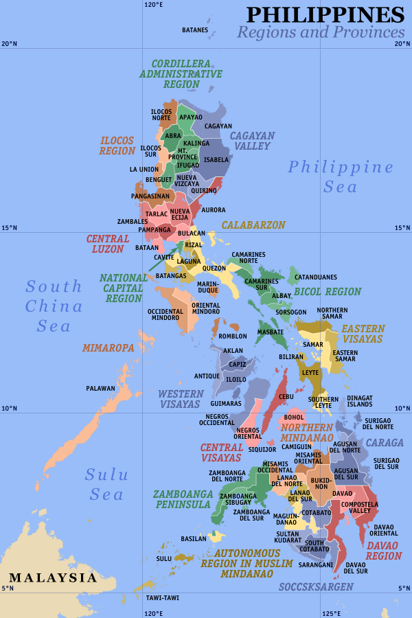
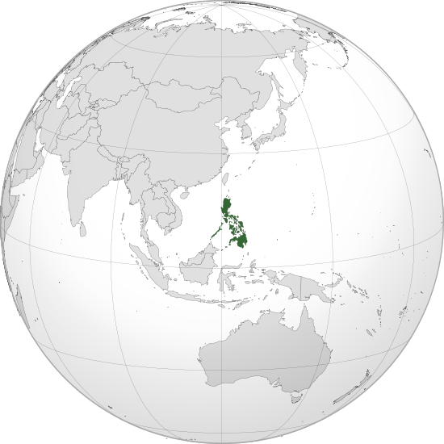
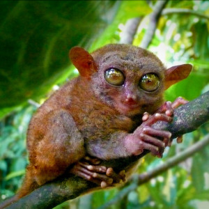
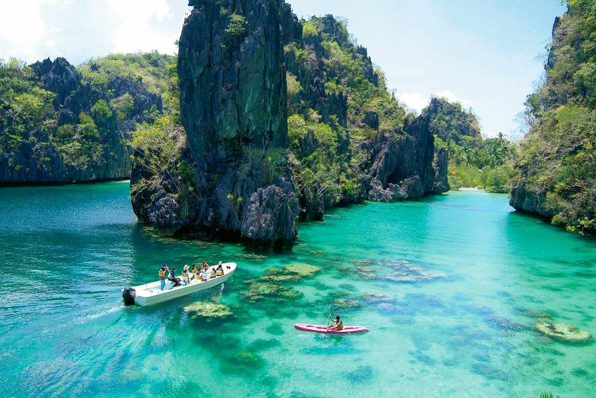
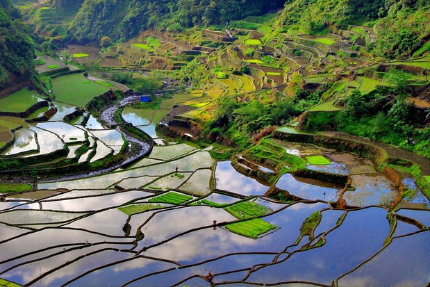
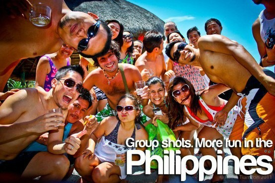

Where is it?
The Philippines, officially known as the Republic of the Philippines, is a sovereign island country in Southeast Asia situated in the western Pacific Ocean. It consists of 7,107 islands that are categorized broadly under three main geographical divisions: Luzon, Visayas, and Mindanao. Its capital city is Manila while its most populous city is Quezon City; both are part of Metro Manila. 
What is it like?
Philippines has one of the most diverse wildlife in the world.Philippines is home of a diverse range of birds, plants, animals and sea creatures. There are nearly 200 mammal species in the Philippines. The Philippine Tarsier is one of the smallest species of monkeys in the world. You will find more than 600 species of birds, over 300 species of reptiles and amphibians and at least 400 coral species. From the giant whale shark to the world's smallest fish, everything you can dream of is united in the beautiful islands of the Philippines.
 
Philippines has some stunning surroundings, the fantastic Chocolate Hills in Bohol, the Rice Terraces in Banaue, the incredible Archipelago of El Nido. You can climb one of the 37 volcanoes, for example the Mount Pinatubo, or see the world's smallest volcano of Taal. You can discover caves, lakes and waterfalls. If you love nature, you will love the Philippines.

If you want the bright and sunny, tropical glory of the Philippines, plan your trip between the summer months of March and May. It will be hot and dry, but that is what beaches, sunblock and straw hats are for! Want things a little bit cooler? Then November to February are best for you. We would say avoid the rainy season from June to October, but a good traveller knows that off-peak season means lower rates in airfares, hotels, resorts and maybe the beer too. Just be forewarned that the months between July and September are characterized by typhoons.
Who we are?
Wherever you choose to go in the Philippines, it's the Filipinos that will make your holiday unforgettable. Lonely Planet calls us, "among the most ebullient and easy going people anywhere." Don't be shy about coming up to a Filipino and starting a conversation. We're not just fun, we're officially friendly too. Forbes.com ranked us the friendliest country in Asia - eight in the world!We have two official languages: Filipino and English. Filipino is based on Tagalog, the predominant dialect from the Luzon mainland, and is used nationally to communicate among the ethnic groups. There are seven other widely used languages: Cebuano, Ilocano, Hiligaynon or Ilonggo, Bicolano, Waray, Pampango, and Pangasinense. Apart from these, there are more than 176 local dialects!
